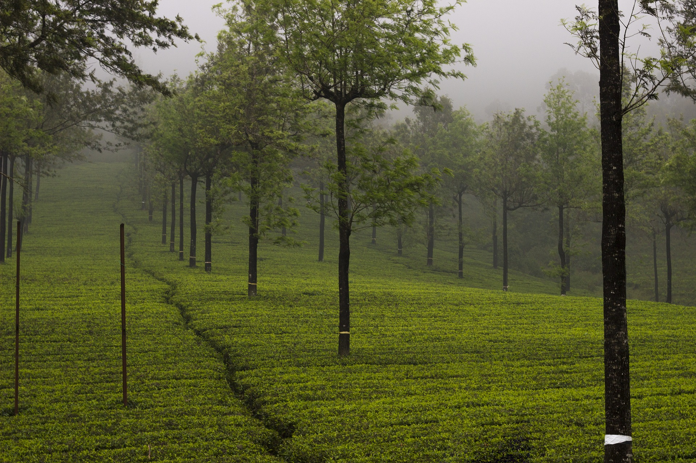

Munnar


is a district in the Indian state of Kerala.It was constituted on 26 January 1972, by splitting the district of Kottayam into two parts.Its division was previously headquartered at Kottayam city, but moved to Kuyilimala near Painavu and Cheruthoni in June 1976. Idukki district lies amid the Cardamom Hills of Western Ghats in Kerala. Though it is the second-largest district in the region in terms of area, it has the lowest population density among the districts of Kerala. The urban population is higher than the rural population.